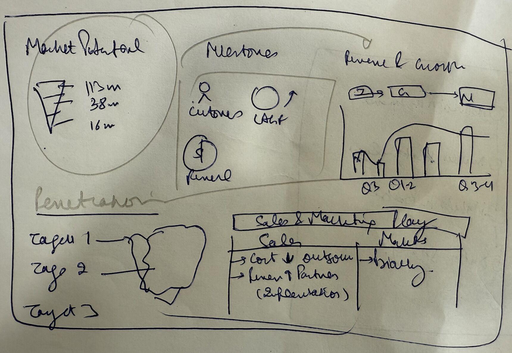
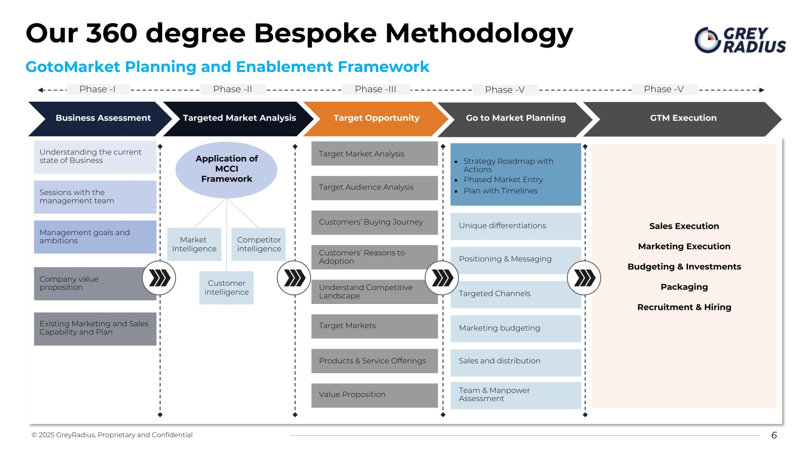

Product-Market Fit & GTM Strategy for a B2B SaaS Platform
Good NPS from early users but no explanation for why deals were being won. Before committing to scale, the founders needed to know exactly which customer profile to pursue – and why. Eighty interviews later, they had their answer.

The Situation
Winning deals without knowing why. Growing without a repeatable model. Ready to scale – but into what?
A B2B SaaS platform had achieved meaningful early traction – 40+ paying customers, strong NPS scores, and growing MRR. The problem was that the founders couldn't clearly articulate why they were winning. Deal sources were varied, win rates were inconsistent, and different members of the team had different theories about which customer type was most valuable.
The platform was preparing for a Series A raise. Investors were asking the right questions: What is your ICP? Why do you win? Why do you lose? What does your retention look like by segment? The founders had answers, but they were based on intuition rather than evidence – and sophisticated investors would probe exactly that gap.
GreyRadius was engaged to run a structured PMF and GTM programme – combining deep buyer research with ICP validation and a Series A-ready GTM strategy.
Engagement at a glance
Client
B2B SaaS platform, India
Service
GTM Execution-as-a-Service · Pitchbook & Fundraising
Research programme
80 structured buyer interviews
Output
ICP validation, product roadmap, Series A GTM strategy
Early adoption is not product-market fit. Confusing the two is how SaaS companies scale the wrong customer.
Undefined ICP
The platform had customers across five different industry verticals, three company size brackets, and two distinct use cases. Without understanding which combination of these dimensions produced the best retention, expansion, and referral outcomes, any GTM investment would be spread too thin to build real category momentum.
Unclear win/loss drivers
The team had a general sense of why they won deals – but different people in the company had different theories. Without structured win/loss interviews with actual buyers – including deals they'd lost – there was no objective basis for improving conversion or positioning against specific competitors.
Product roadmap driven by the loudest voices
Feature prioritisation was being driven by the most vocal existing customers, not by the segments with the highest retention and expansion potential. A roadmap built on this basis would over-invest in features valued by edge-case customers and under-invest in the capabilities that would drive scale in the core ICP.
Eighty interviews. Three ICP segments. One GTM you can defend to any investor.
Structured buyer interview programme
Conducted 80 structured interviews across current customers, churned customers, prospects, and lost deals. Each interview was designed to surface the real evaluation criteria, the key objections, the alternative solutions considered, and the specific workflow pain that drove the purchase decision. The research covered all five industry verticals and three company size brackets to enable meaningful cross-segment comparison.
ICP segment validation
Analysed interview data across retention, expansion, referral, and win rate dimensions by customer segment. Identified three clearly differentiated ICP profiles – each with distinct buying triggers, evaluation criteria, product usage patterns, and expansion pathways. One segment that had been deprioritised internally turned out to be the highest-retention and highest-expansion cohort in the dataset.
Product roadmap reprioritisation
Mapped the existing roadmap against the validated ICP needs. Identified three feature clusters that were consuming significant engineering resource but had low importance in all three ICP segments – and two capabilities that the research showed were the primary drivers of expansion revenue but had been deprioritised. The roadmap was rebuilt around ICP evidence, not internal opinion.
Series A GTM strategy
Built the GTM strategy around the validated ICP framework – covering channel selection, messaging by segment, sales playbook structure, and the competitive positioning narrative. Packaged the research findings and GTM strategy into a format ready for Series A investor presentations – with evidence-backed answers to the questions that sophisticated investors ask.
"We had great NPS from early users but couldn't explain why we were winning deals. GreyRadius helped us articulate our ICP and build a GTM that made our category obvious."
Validated ICP. Rebuilt roadmap. A GTM strategy investors could interrogate – and believe.
Research
80 buyer interviews
Current customers, churned accounts, prospects, and lost deals – across all segments
ICP
3 validated segments
Each with distinct buying triggers, win rates, retention patterns, and expansion drivers
Roadmap
Rebuilt on ICP evidence
Three low-value feature clusters deprioritised; two high-expansion capabilities moved up
Fundraising
Series A ready
ICP, GTM, and roadmap packaged with evidence-backed investor presentation material
Three fully characterised ICP segments with buying trigger maps, evaluation criteria profiles, retention and expansion benchmarks, and recommended GTM sequencing.
Structured analysis of win and loss patterns across all five verticals – identifying the specific objections, competitive alternatives, and decision criteria driving each outcome.
Evidence-based roadmap with ICP-aligned feature prioritisation, deferred low-value items, and accelerated high-expansion capabilities – with the research rationale for each decision.
Investor-ready GTM strategy covering ICP definition, channel selection, sales playbook, competitive positioning, and the key metrics that demonstrate repeatable PMF.
From the engagement


The 80-interview research programme was the most valuable thing we did before Series A. We walked into investor conversations knowing our ICP, our win reasons, and our product roadmap – all evidence-backed.
"Most B2B SaaS founders confuse product-market fit with early adoption. Real PMF means understanding precisely which customer profile generates retention, expansion, and referrals – and being able to reproduce it at scale. That requires buyer research, not user surveys."
Building a B2B SaaS GTM or preparing for a raise?
We've helped SaaS founders validate ICP, build evidence-backed GTM strategies, and prepare fundraising materials across India, GCC, and North America. Talk to us.